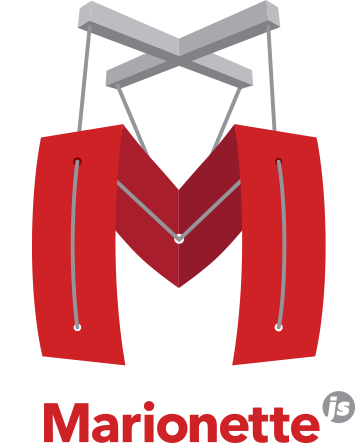
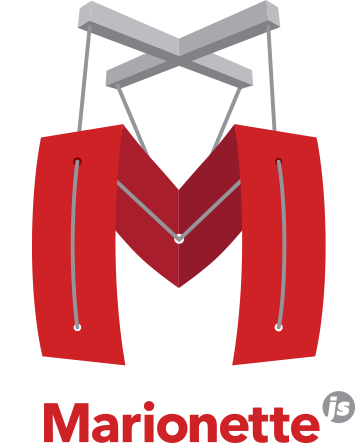

Hi. My name is Vyacheslav.
I am a web-developer and I help people to build their web-services. My main goal is to translate business idea and business requirements into most suitable application architecture, that solves a real people's problems.
Here’s some of the reasons to work with me:
6 years in Ruby on Rails and Javascript. I made my first website 15+ years ago. Last 6 years I work professionally as a Ruby on Rails developer with using frontend frameworks.
Full-stack development.I can do web-application from backend to great frontend effects, including third-party API’s and transforming your PSD to a live html code.
I always learn something. I love computing and technologies. And I am familiar with dozens of technologies, starting from Google Analitics, Different API’s, Social Networks, Advertisement systems like Adwords and ads in social networks, to system administration. Now I am learning Unix System Administration (1 year course).


 
